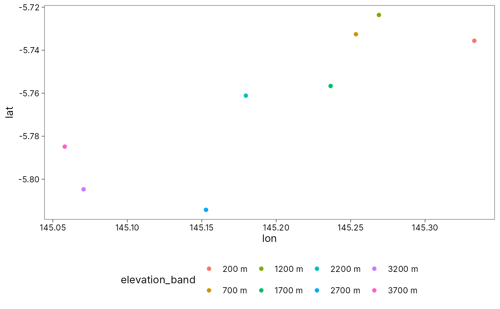

Map theme
theme_tidymapr.Rdtheme_tidymapr() is the clean ggplot2 theme used by every tidymapr map:
white background, black text, plain facet strips and a legend at the
bottom. It matches tidydiversity::theme_tidydiversity(), so maps and
diversity plots from the two packages look the same side by side.
Usage
theme_tidymapr(
base_size = 11,
base_family = "",
legend_position = "bottom",
grid = c("y", "x", "xy", "none")
)Arguments
- base_size
Base font size in points.
- base_family
Base font family.
- legend_position
Legend position, passed to
ggplot2::theme().- grid
Draw major grid lines:
"y","x","xy"or"none".
Examples
library(ggplot2)
ggplot(geo_example_sites(), aes(lon, lat, colour = elevation_band)) +
geom_point() +
theme_tidymapr(grid = "none")
